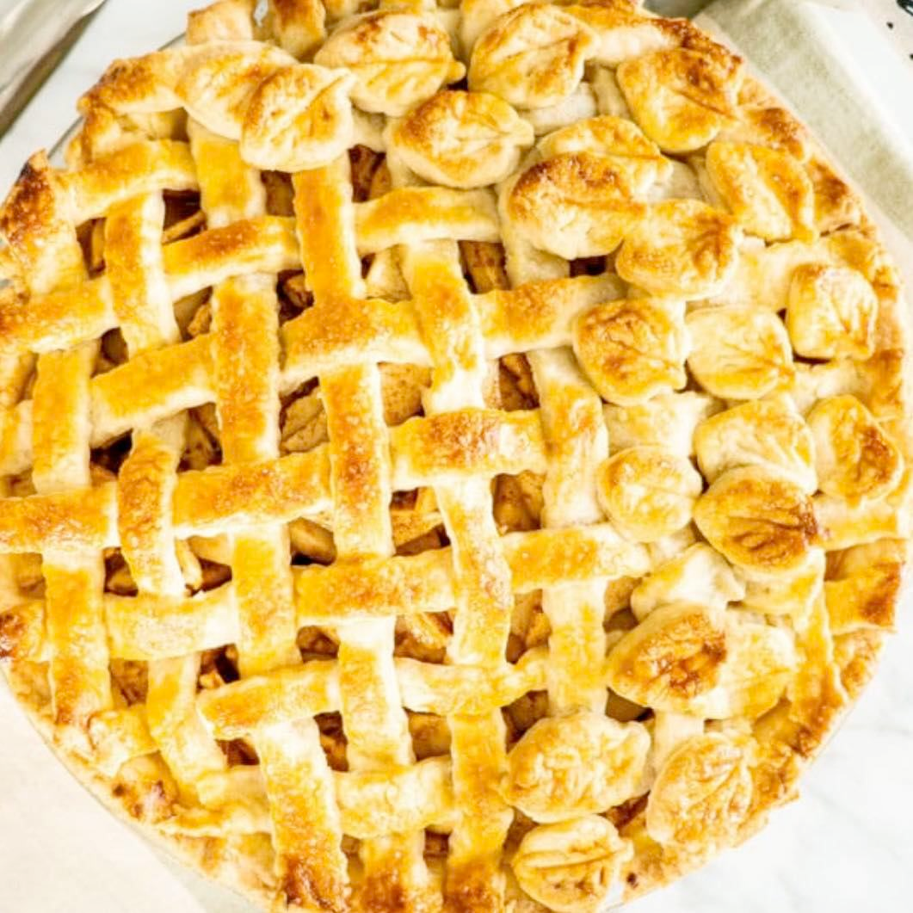
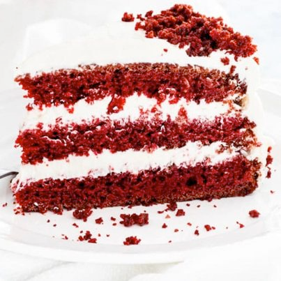
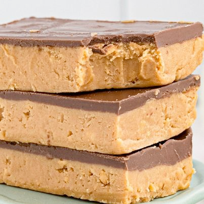
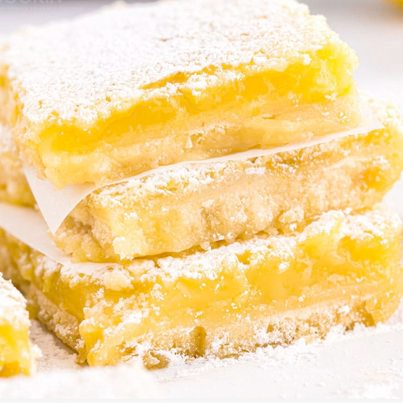
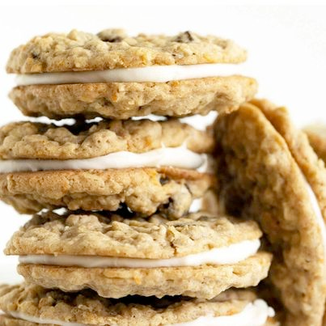

A healthy meal delivered up to your door, every single day
You can order food from this website

We are providing more than 40+ food recipes
1

Ingredients
1 (16.5-oz.) log refrigerated chocolate chip cookie dough (such as Pillsbury)
20 Oreo cookies, plus more for topping
2 (8-oz.) blocks cream cheese, softened
1/2 c. granulated sugar
2 large eggs
1/2 tsp. pure vanilla extract
Pinch of kosher salt
Warm caramel, for drizzling
Instructions
DIRECTIONS Preheat oven to 325°. Line an 8"-x-8" baking dish with parchment paper with a 2" overhang. Press cookie dough into bottom of baking dish. Top with a single layer of Oreos, breaking them up to fit, if necessary, and set aside. Make cheesecake layer: In a medium bowl using a handheld mixer or stand mixer with the paddle attachment, beat cream cheese until smooth. Beat in sugar, eggs, vanilla, and salt until fully combined. Pour over Oreo layer and smooth top. Top with broken Oreo pieces and bake until the center is only slightly jiggly, 30 to 35 minutes. Refrigerate until completely chilled, at least 3 hours and up to overnight. Remove cheesecake bar from baking dish and slice. Drizzle with warm caramel before serving.
2
Ingredients
Pastry1 pie crust whole recipe for top and bottom crust
Filling8 medium apples peeled, cored and sliced1 tablespoon lemon juice freshly
squeezed½ cup brown sugar packed2 tablespoons all-purpose flour1 teaspoon
cinnamon ground1 egg beaten, for egg wash
INSTRUCTIONS
Make the pie crust according to this pie crust recipe. You can also use store bought pie crust.While pie crust is resting in the fridge, toss the sliced apples with the lemon juice, brown sugar, cinnamon and flour. Set aside.Remove the dough from the refrigerator, and let it sit at room temperature for up to 10 minutes. This is required to soften the dough a bit, so that you can roll it out.Preheat oven to 375 F degrees. Roll out each disc using a rolling pin. If your dough is sticking to the surface or to the rolling pin add a bit more flour as necessary. Roll it until it’s about 1/8 of an inch in thickness. Place the pie dough lightly into a pie plate. I usually roll it on the rolling pin and unroll it over the pie plate. (see video) Crimp the edge and cut off excess dough.Add the apple mixture to the bottom crust.Roll out the second disc. Gently place on top of the filling and make vents using a sharp knife, or cut into long strips to make a lattice. Trim the excess dough, if needed. Brush generously with beaten egg.Bake for about an hour or until the crust is golden and starts to brown and juices are bubbling
3
Ingredients
Cake2 cups all-purpose flour2 cups sugar granulated1 tablespoon cocoa powder
unsweetened1 teaspoon salt1 teaspoon baking powder2 teaspoon baking soda1 cup buttermilk
1/2 cup coconut oil2 large eggs1 teaspoon vanilla extract1 cup coffee hot
1 tablespoon red gel food coloring
Instructions
Preheat the oven to 350 F degrees. Prepare the baking pans: Prepare 2 8 inch cake pans. Cut out 2 parchment paper circles that will fit inside each pan and spray them with some cooking spray. Make sure to spray some cooking spray up the sides of the pans too.Make the cake batter: In the bowl of your mixer, add the flour, sugar, cocoa powder, salt, baking powder, baking soda and using the paddle attachment mix everything together until well combined, on low speed. In a large bowl mix together the buttermilk, coconut oil, eggs, and vanilla extract. Whisk in the coffee and food coloring. Add the wet ingredients to the mixer bowl and mix everything over medium speed for about 2 minutes, until everything is well combined. Scrape the bottom of the bowl with a spatula and mix as needed. Add more red food coloring as needed to get to the desired color. Pour the batter into the 2 prepared pans, equally. Bake: Place the cake pans in the oven and bake for 30 to 35 minutes. To test if the cake is done, insert a toothpick in the middle of the cake and if it comes out clean, it’s done. Let the cake cool in the pans for about 30 minutes, then turn them out onto a cooling rack or a cutting board and cool completely.Prepare the cream cheese frosting: In the bowl of your mixer whip the whipping cream until soft peaks form. Remove from mixer bowl and refrigerate until ready to use.In the bowl of your mixer, beat the cream cheese together with the vanilla extract and icing sugar, until smooth. Fold in the whipping cream gradually until well combined. Assemble the cake: Cut the top part of the cake first and crumbled it up in a bowl, we’ll use this for decoration after.Cut each cake into 2 pieces. Start by placing 1 cake layer onto your serving cake platter, then spread some of the cream cheese frosting, about 1/4, evenly over the cake layer. Repeat with remaining cake layers. Using a spatula, spread the cream cheese frosting evenly over the top of the cake and up the sides. Decorate the cake with the remaining cake crumbs if desired. Refrigerate until ready to serve.
4
Ingredients
1 cup unsalted butter melted
2 cups animal cracker crumbs or vanilla wafers, graham crackers, etc2 cups powdered sugar1 1/2 cups creamy peanut butter
Topping1/4 cup peanut butter
10 oz semi-sweet chocolate chopped
Instructions
In a mixer or a food processor, combine the first four ingredients until smooth. Spread into a 13×9 baking pan. For the topping, melt the chocolate and peanut butter together in the microwave for 1 minute. Stir. If not completely melted you can heat in 10 second intervals until smooth. Spread over the top of the peanut butter layer. Chill dessert in the refrigerator for about an hour, or in the freezer for 15 minutes. Cut into bars and serve.
5
Ingredients
Crust
2 cups all purpose flour
1 cup cold unsalted butter, cubed
1/2 cup powdered sugar Lemon Filling
2 cups granulated sugar
1/3 cup all purpose flour 6 large eggs
1/2 cup lemon juice freshly squeezed 2 tablespoon lemon zest
Topping 1/4 cup powdered sugar
Instructions
Preheat oven to 350 F and line a 13x9 baking pan with parchment paper. Be sure that parchment hangs over the edges, you will use it to lift out the bars when they are cool. Make the Crust In bowl of your food processor, pulse to combine flour, powdered sugar and butter. Process until coarse crumbs are formed, just as the dough begins to come together. Dump crumb mixture into prepared pan and press evenly. Bake for 18-20 minutes, until lightly browned. Remove from oven and allow to cool on wire rack. Make the Lemon Filling With an electric mixer set at medium speed, beat granulated sugar, flour, eggs, lemon juice, and lemon zest until ingredients are well blended. Pour mixture evenly over warm crust. Return to oven; bake until center is set and edges are golden, about 18-20 minutes. Remove pan to wire rack; cool completely (about 2 hours). When completely cool, refrigerate for about 30 minutes to help set the filling. Remove bars from fridge and lift out of pan using parchment paper handles. Sift some powdered sugar across the top and cut into bars (approximately 2" x 1.5", 30 bars).
6
Ingredients
3/4 cup unsalted butter almost fully melted and cooled slightly
3/4 cup granulated sugar 1/2 cup light brown sugar lightly packed
1 large egg 1 large egg yolk 1 teaspoon pure vanilla extract
1 3/4 cup all purpose flour plus 2 Tablespoons all purpose flour 1 1/2 cup old-fashioned rolled oats
2 teaspoons ground cinnamon 1/2 teaspoon ground nutmeg 1/2 teaspoon baking soda 1/2 teaspoon salt 1/4 teaspoon ground ginger
1 carrot medium, peeled and finely grated 1/2 cup unsweetened shredded coconut 1/2 cup raisins
Cream Cheese Frosting
4 Tablespoons unsalted butter at room temperature 4 Tablespoons cream cheese at room temperature, about 2 oz 1/2 teaspoon pure vanilla extract 2 cups powdered sugar a pinch of salt
Instructions
Preheat the oven to 350F. Line 2 half sheet pans with parchment paper or silpat liners. Whisk together the butter, granulated sugar, and brown sugar in a large bowl. Whisk in the egg, egg yolk, and vanilla extract until smooth. Add the flour, oats, cinnamon, nutmeg, baking soda, salt, and ginger, and stir to combine. Stir in the grated carrot, shredded coconut, and raisins. Use a 1 1/2 tablespoon sized scoop to scoop the dough and roll it into balls. Arrange them 2 inches apart on the prepared baking trays so they have room to expand (8 cookies per half sheet pan works well). Bake the cookies 2 trays at a time until they’re golden along the outside and still look just a touch doughy in the center, about 14 to 15 minutes, rotating the trays once halfway through. (If baking 1 tray at a time, start checking for doneness at 11 minutes.) Cook the remaining cookie dough the same way. Let the cookies cool on the trays before removing.